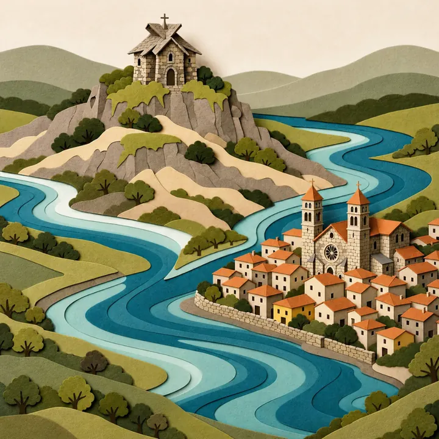
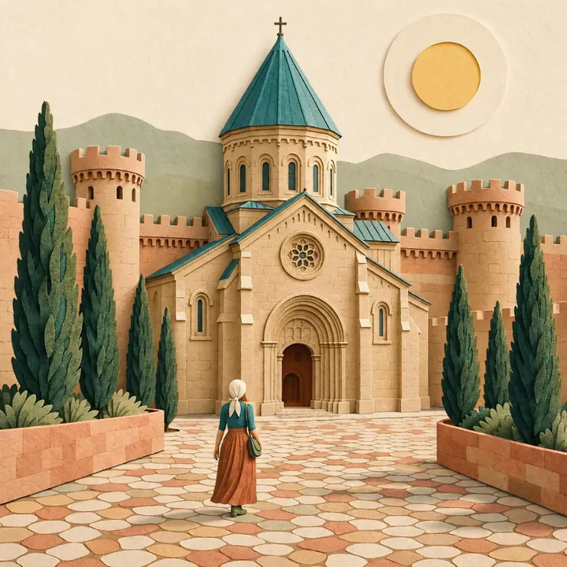
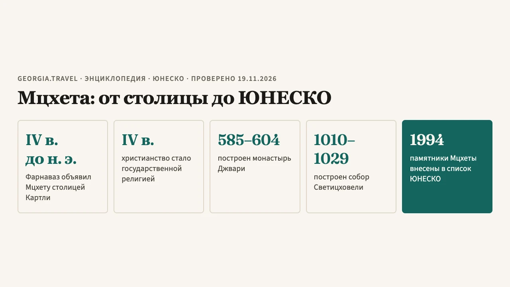
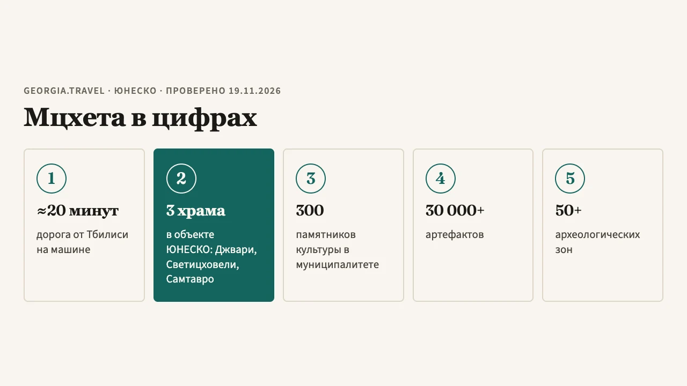
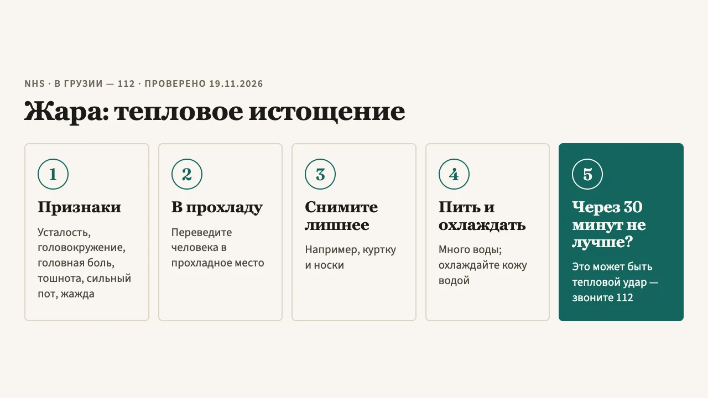

- От Тбилиси
- около 20 минут
- Столица Картли
- IV в. до н. э. — V в.
- ЮНЕСКО
- с 1994
- Джвари
- 585–604
- Светицховели
- 1010–1029
- Скорая
- 112
Статья входит в справочник о медицине в Грузии.
Что посмотреть в Мцхете
Главное здесь — три храма из списка ЮНЕСКО: монастырь на утёсе над городом, кафедральный собор и монастырь Самтавро. Если в запасе полдня, начните с них. С машиной можно заехать и в монастыри в окрестностях.
Монастырь Джвари
Он стоит на скалистом утёсе к востоку от города и смотрит на Мцхету сверху. По данным Национальной администрации туризма Грузии (на английском), на этом месте святая Нино в IV веке поставила деревянный крест.

Нынешний крестово-купольный храм построил между 585 и 604 годами правитель Картли Степаноз I. По плану это тетраконх. В храме сохранились надписи асомтаврули — одни из ранних образцов грузинского письма.
Монастырь действующий: монахи живут в нём с 1996 года.
Как подняться к монастырю — пешком или только на машине, — официальные источники не пишут. Узнайте на месте.
Собор Светицховели
Главный собор города строили с 1010 по 1029 год, при католикосе Картли Мелхиседеке. Так пишет Национальная энциклопедия Грузии (на английском). На georgia.travel и сайте мэрии стоят другие годы — «1010–1129», мы берём даты энциклопедии.

По энциклопедии, зодчий Арсукисдзе использовал части более древней церкви V–VI веков, но по сути построил новое здание. Его имя сохранила надпись на соборе: «Рука Арсукисдзе, раба Божьего, да простится ему».
Монастырь Самтавро
Это третий храм из списка ЮНЕСКО. Сайт georgia.travel называет здесь два памятника: церковь Святой Нино Самтавро IV века и церковный комплекс 1030 года. Мы приводим обе даты так, как их даёт сайт.
По данным мэрии, именно святая Нино проповедовала здесь христианство.
Что ещё рядом: Зедазени и Шио-Мгвиме
В окрестностях georgia.travel называет три монастыря: Зедазени, Шио-Мгвиме и Цилкани. Все они названы в честь Сирийских отцов, пришедших в Грузию в VI веке.
Зедазени стоит к северо-востоку от Мцхеты. Его главная церковь — трёхнефная базилика Иоанна Крестителя конца VIII века, по данным Национальной энциклопедии Грузии (на английском). Как добраться до Зедазени и Шио-Мгвиме, уточните заранее.
В самом городе по дороге к собору, по описанию georgia.travel, — шумный рынок. Там торгуют местные ремесленники и продавцы вина.
Наш совет. Начните с монастыря на утёсе: сверху виден весь город, и проще решить, куда идти дальше.
Наш совет: маршрут на полдня. Утром — Джвари, пока не жарко и мало людей; потом собор Светицховели и рынок по дороге к нему; после — Самтавро. Если остаётся время и вы на машине, можно добавить Шио-Мгвиме или Зедазени — это уже целый день.
Древняя столица и ЮНЕСКО
Около восьмисот лет, до конца V века, город был политическим центром царства Картли. Так пишет мэрия Мцхеты (на английском).
По легенде, город основал Мцхетос ещё в I тысячелетии до н. э. Столицей Картли — её ещё называют Иберией — его объявил царь Фарнаваз в IV в. до н. э. Это сходится у мэрии и georgia.travel.
Отсюда же, по данным georgia.travel, в IV веке христианство провозгласили государственной религией Грузии. Когда столицу перенесли в Тбилиси, древний город остался культурным и религиозным центром страны, пишет мэрия.

В списке ЮНЕСКО
«Исторические памятники Мцхеты» внесены в список Всемирного наследия в 1994 году. В объект входят три средневековых храма — Джвари, Светицховели и Самтавро — и крупные археологические памятники. По словам ЮНЕСКО, археологические памятники показывают высокий уровень искусства и культуры Грузии за четыре тысячелетия.
С 2009 по 2016 год объект стоял в списке Всемирного наследия под угрозой. По данным ЮНЕСКО (на английском), туда его внесли из-за порчи камня и фресок при работах на зданиях. Потом держали в списке из-за неконтролируемой застройки.
13 июля 2016 года Комитет всемирного наследия исключил объект из этого списка. Так комитет признал усилия Грузии по охране памятников и управлению ими.
300 памятников в округе
Город иногда называют городом-музеем, пишет georgia.travel. В муниципалитете 300 памятников культуры, больше 30 000 артефактов и больше 50 археологических зон.
Как добраться из Тбилиси в Мцхету
На машине — около 20 минут, по данным georgia.travel (на английском). Город лежит севернее Тбилиси, у слияния Арагви и Куры, — так пишет Википедия.
Мцхета — административный центр края Мцхета-Мтианети, по данным той же Википедии. Город небольшой: по переписи 2014 года здесь жили 7 940 человек.
Расстояние в километрах в разных источниках указано по-разному, а официального числа мы не нашли. Поэтому даём время в пути: доехать можно быстро, и город легко уложить в маршрут на полдня.
Как устроены маршрутки в Грузии, читайте в нашем материале о маршрутках (на английском). Официального расписания маршруток из Тбилиси в Мцхету мы не нашли.
Джвари стоит не в центре, а к востоку от города, на утёсе. Едете на своей или арендованной машине — прочитайте наш материал о вождении в Грузии (на английском): там о полисе на машину, дорогах и правилах.

Наш совет. В храмы приходите с закрытыми плечами и коленями, женщинам возьмите платок: так принято в грузинских храмах. Платок легко носить в сумке весь день.
После города едете в горы — у нас есть путеводители по Казбеги и Гудаури.
Жара летом: тепловое истощение и удар
Головокружение, тошнота и сильный пот в жаркий день — повод остановиться: это может быть тепловое истощение. Уйдите в прохладу, пейте и охлаждайтесь. Не стало лучше за 30 минут — звоните 112.
Ниже — пересказ памятки британской службы здравоохранения NHS (на английском). Номер в Грузии мы поставили свой: 112.
Признаки теплового истощения
По NHS, при тепловом истощении бывают:
- усталость;
- головокружение;
- головная боль;
- тошнота или рвота;
- сильный пот, кожа бледная и липкая;
- мышечные спазмы в руках, ногах и животе;
- высокая температура;
- сильная жажда;
- раздражительность.
У детей признаки обычно те же, что у взрослых. Человека с такими признаками нужно охладить и дать ему пить.
Что делать: четыре шага
Само по себе тепловое истощение обычно не требует скорой, если человека удаётся охладить за 30 минут. NHS советует четыре шага:
- Переведите человека в прохладное место.
- Снимите лишнюю одежду — куртку, носки.
- Дайте много воды. Подойдёт и изотонический спортивный напиток или порошок для регидратации, разведённый водой: он возвращает соли, которые ушли с потом.
- Охлаждайте кожу: брызгайте прохладной водой или обтирайте губкой и обмахивайте. Холодные пакеты, обёрнутые тканью, кладите под мышки или на шею.
Оставайтесь рядом, пока не полегчает. По NHS, человек должен остыть и почувствовать себя лучше за 30 минут.

Тепловой удар: когда звонить 112
Тепловой удар NHS называет экстренным случаем, нужна срочная медицинская помощь. В Грузии звоните 112, если:
- за 30 минут отдыха в прохладе, охлаждения и питья лучше не стало;
- температура очень высокая;
- кожа горячая, не потеет и может покраснеть;
- частый пульс;
- частое дыхание или одышка;
- спутанность сознания и беспокойство, нарушена координация;
- судорожный приступ;
- человек потерял сознание.
Пока ждёте скорую, заверните человека в прохладную мокрую простыню или обтирайте холодной водой и обмахивайте. Потерял сознание — уложите его в восстановительное положение и скажите об этом диспетчеру. Следите за дыханием и пульсом. Нет признаков жизни — начинайте сердечно-лёгочную реанимацию.
Сам заболевший не должен садиться за руль и ехать в приёмное отделение, предупреждает NHS.
Как не перегреться
Риск выше в жару и при нагрузке. NHS советует:
- пить больше прохладных напитков, особенно если много ходите;
- носить светлую свободную одежду;
- не бывать на солнце с 11 до 15 часов;
- не перебарщивать с алкоголем;
- избегать тяжёлых нагрузок.
Особенно следите за детьми, пожилыми и людьми с хроническими болезнями, например диабетом или болезнями сердца: у них риск выше.
Наш совет. Летом смотрите храмы утром или ближе к вечеру и берите воду на весь день.
Где врач рядом с Мцхетой
Если человеку плохо, звоните 112. GOV.UK (на английском) советует набрать 112 и попросить скорую.
Как говорить с 112. По данным службы 112, операторы говорят в том числе по-русски, а позвонить можно и с телефона без SIM-карты. Отвечайте на вопросы оператора.
Наш совет. Начните с места — «Мцхета» и ориентир: собор, Джвари, рынок. Потом скажите, что случилось.
За пределами Тбилиси медицинская помощь ограничена, предупреждает GOV.UK. В Тбилиси она есть, но может быть дорогой. Официальных данных о больнице в самом городе мы не нашли, поэтому не называем её. Если врач направил вас в клинику, GOV.UK советует быстро сообщить об этом страховщику.
Когда помощь нужна не срочно, до столицы около 20 минут на машине. Семейного врача там можно найти в каталоге врачей Тбилиси на 100doc.ge.
Для въезда в Грузию иностранцу нужен полис с покрытием не меньше 30 000 лари — подробнее в нашем разделе о полисе для въезда.
Частые вопросы
Как добраться из Тбилиси в Мцхету?
На машине около 20 минут, по данным georgia.travel. Как устроены маршрутки, рассказываем в отдельном материале; официального расписания мы не нашли.
Что успеть за полдня?
Три храма из списка ЮНЕСКО: Джвари, Светицховели и Самтавро. Останется время — рынок по дороге к собору, а с машиной — Зедазени или Шио-Мгвиме.
Мцхета — объект ЮНЕСКО?
Да. «Исторические памятники Мцхеты» в списке Всемирного наследия с 1994 года. С 2009 по 2016 год объект был в списке под угрозой, в 2016-м его оттуда исключили.
Когда построен собор Светицховели?
С 1010 по 1029 год, при католикосе Мелхиседеке, по данным Национальной энциклопедии Грузии.
Когда построен Джвари?
Между 585 и 604 годами, по данным georgia.travel. Строил правитель Картли Степаноз I на месте, где святая Нино в IV веке поставила крест.
Как одеться в храм?
Наш совет: закрытые плечи и колени, женщинам — платок. Так принято в грузинских храмах. Официальных правил для посетителей мы не нашли.
Что делать при тепловом ударе?
Звонить 112: NHS называет тепловой удар экстренным случаем. Пока ждёте скорую, охлаждайте человека — мокрой прохладной простынёй, холодной водой, обмахиванием.
Где найти врача рядом?
Если плохо — 112. За пределами Тбилиси помощь ограничена, предупреждает GOV.UK. Семейного врача ищите в Тбилиси: это около 20 минут на машине.
Источники
- ЮНЕСКО: «Исторические памятники Мцхеты» исключены из списка под угрозой, 13 июля 2016 года — 1994, 2009, три храма (на английском)
- georgia.travel: город — дорога из Тбилиси, столица Картли, храмы, окрестности, 300 памятников (на английском)
- georgia.travel: монастырь на утёсе — крест Нино, 585–604, асомтаврули (на английском)
- Национальная энциклопедия Грузии: Арсукисдзе — собор, 1010–1029 (на английском)
- Национальная энциклопедия Грузии: Зедазени (на английском)
- Мэрия Мцхеты: история города (на английском)
- Википедия: Мцхета
- NHS: тепловое истощение и тепловой удар (на английском)
- GOV.UK: здоровье в Грузии — медпомощь вне Тбилиси, 112 (на английском)
Это справочная информация, а не медицинская консультация: лечение назначает врач. Проверено 19 ноября 2026 года.